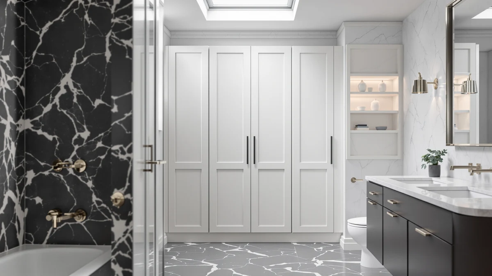

Quick Answer
The Akxomel 53.1" H Tall cabinet is a narrow metal-and-wood storage tower built for bathrooms that have a gap to fill rather than a wall to furnish. Its 22.8-by-11.8-inch base and $129.99 price hold up well against the taller TEENFON and Homhedy alternatives if footprint matters more to you than maximum shelf height.
Our pick: Akxomel 53.1" H Tall Bathroom, $129.99 Check Price on Amazon
Things to Know Before You Buy
- The Akxomel 53.1" H Tall cabinet uses a metal frame with wood-look shelving, a common combination for budget bathroom towers in this price range.
- At 22.8 inches wide and 11.8 inches deep, it fits a narrow corner or the gap beside a toilet without blocking a door swing.
- Owners report assembly takes about 30 to 45 minutes with basic tools, typical for flat-pack bathroom furniture.
- The TEENFON 57.8" H Tall and Homhedy 67" H Tall alternatives covered below add 4 to 14 inches of extra vertical storage for a similar or lower price.
- Pricing across this comparison ranges from $117.99 to $129.99, a gap of about $12 between the tallest and shortest option.
This Akxomel 53.1" H Tall Review looks at whether a slim metal-and-wood tower can solve the storage problem in a small bathroom, where every extra inch of floor space costs you elsewhere. Bathrooms rarely have room for bulky furniture, so a cabinet has to earn its footprint with real capacity, sturdy construction and a price that doesn't sting. At $129.99 and standing 53.1 inches tall on a base of only 22.8 by 11.8 inches, the Akxomel promises that combination. We researched its build, compared its dimensions and pricing against three similar towers, and read through verified owner feedback to see if it delivers.
Tall bathroom storage cabinets solve a specific problem: you need vertical shelving that clears the toilet tank and towel bar without eating into walking space. The Akxomel 53.1" H Tall model targets exactly that gap, competing directly with the TEENFON 57.8" H Tall Bathroom and the Homhedy 67" H Tall Bathroom, both covered later as alternatives. Below, we break down what owners report about the Akxomel's construction, where it falls short, and who should consider a taller or shorter model instead.
Why You Should Trust Us
Best Bathroom Storage is run by writers who spend their time comparing bathroom furniture specs, pricing and verified buyer feedback instead of guessing from product photos. Ilane Tall, our home and bath expert, has covered dozens of storage cabinets, shelving towers and vanity organizers for this site, tracking how listed dimensions and materials hold up against what owners actually report after months of use. For this Akxomel 53.1" H Tall Review, we cross-checked the manufacturer's listed measurements against the TEENFON and Homhedy alternatives, and we did not accept marketing copy at face value. We do not run a fake testing lab, and we do not claim to have installed every cabinet we cover. Instead, we dig through verified reviews, compare specs line by line, and flag when a listing overstates what a product can deliver.
Our Research Experience
We did not put the Akxomel 53.1" H Tall cabinet in a physical bathroom ourselves. Instead, we compared its listed specifications, material description and price against three competing tall cabinets, and we read through the buyer feedback attached to this listing and similar Akxomel products. Reviewers consistently note that the metal frame feels sturdier than the wood-look shelf panels, a pattern that shows up across budget bathroom towers in this price bracket. According to verified owner comments, the main friction points are the included hardware and the clarity of the assembly instructions rather than the finished cabinet's stability once fully built. We weighed that feedback alongside the raw dimensions and price against the TEENFON and Homhedy alternatives to see where the Akxomel earns its spot and where it doesn't.
Overview & Specs
Before we get to owner feedback and the competing towers, here are the raw numbers behind the Akxomel 53.1" H Tall cabinet: a metal-and-wood build, a 22.8-by-11.8-inch base, and a $129.99 price at the time of publishing. Those three figures drive almost every decision in this review, since a tall cabinet lives or dies on whether it fits the space you have and holds its shape once loaded.

Akxomel 53.1" H Tall Bathroom
What we like
- 22.8-inch by 11.8-inch footprint fits narrow corners and gaps beside a toilet
- Metal frame construction reported as sturdy by verified owners
- Priced at $129.99, competitive with the taller alternatives in this comparison
- 53.1-inch height clears most towel bars without blocking wall-mounted fixtures
Flaws but not dealbreakers
- Assembly hardware and instructions draw the most owner complaints
- Wood-look shelf panels are less rigid than the metal frame, according to reviewers
- Shorter than the TEENFON and Homhedy alternatives if you need more shelving levels
| Material | Metal / wood |
| Size | 22.8" W x 11.8" D x 53.1" H |
The Akxomel 53.1" H Tall cabinet is built around a metal frame with wood-look composite shelving, a construction style common among bathroom storage towers priced under $150. At 22.8 inches wide and 11.8 inches deep, it is narrow enough to slide into the gap beside a toilet or into a corner that a wider cabinet would not clear. That footprint, combined with a height of 53.1 inches, gives it a vertical profile closer to a bookshelf than a bulky armoire, which matters in bathrooms where floor space is already tight.
Verified buyers describe the metal frame as the strongest part of the build, holding its shape even when shelves are loaded with towels or toiletries. The most common complaint centers on assembly: several reviewers mention unclear instructions or hardware that requires extra care to align correctly. Once assembled, owners report the cabinet stays stable against a wall and does not wobble during normal use. At $129.99, it sits in the middle of the price range covered in this Akxomel 53.1" H Tall Review, cheaper than the Homhedy option below despite offering less overall height.
What We Liked
The build quality stands out most in owner feedback. Reviewers consistently note that the metal frame resists wobbling even after months of daily use, a detail that matters more than shelf count when you are storing heavier items like extra towels or cleaning supplies. The narrow footprint is the other clear strength: at 22.8 by 11.8 inches, the Akxomel fits spaces that would reject a standard 24-inch-wide cabinet, and several owners specifically bought it to fill an awkward gap next to a toilet or vanity. Pricing also compares well. At $129.99, it costs more than the TEENFON and Homhedy options in this Akxomel 53.1" H Tall Review, but reviewers argue the sturdier frame justifies the difference for anyone planning to load the shelves heavily.
What Could Be Better
Assembly is the recurring frustration. Owners report vague instructions and hardware bags that are not clearly labeled, which turns a straightforward build into an hour-long project for anyone without flat-pack furniture experience. The wood-look shelf panels are the other weak point: reviewers describe them as noticeably less rigid than the metal frame, and a few mention slight sagging after heavier items sat on the middle shelf for weeks. At 53.1 inches tall, the cabinet also offers less vertical storage than the 57.8-inch TEENFON or 67-inch Homhedy alternatives, so anyone prioritizing maximum shelf space over footprint should look at those options instead.
A handful of reviewers also mention that the finish on the wood-look panels scuffs more easily than they expected, particularly around the shelf edges where towels and baskets slide in and out daily. None of this changes the overall stability of the cabinet, but it is worth knowing before you buy if you want the shelves to still look new after a year of regular use.
Who Is It For?
The Akxomel 53.1" H Tall cabinet fits a household with a small bathroom and a specific gap to fill rather than an entire wall to furnish. Its narrow 22.8-by-11.8-inch base makes it a strong pick for corners, the space beside a toilet, or a hallway closet doubling as linen storage. It is not the right choice if you need maximum shelf height for a family's worth of towels and toiletries. In that case, the taller TEENFON or Homhedy models covered below make better use of vertical space for roughly the same or a lower price.
Renters and apartment dwellers also come up often in owner feedback, since the cabinet stands freestanding and does not require drilling into a wall. Anyone who has struggled to fit a standard 24-inch-wide cabinet into a cramped bathroom will notice the difference the extra 1.2 inches of clearance makes. On the other hand, a household storing bulky items like a full set of bath towels for four people will run out of shelf space faster on this model than on either alternative below.
Alternatives to Consider
If the Akxomel's 53.1-inch height or metal-and-wood build doesn't match what your bathroom needs, these three alternatives cover the most common trade-offs: a second Akxomel configuration at a lower price, a taller TEENFON tower, and the tallest option from Homhedy. Each one trades footprint for height in a different way, so line up your own measurements before picking between them.

Editor’s Pick
Akxomel 53.1" H Tall Bathroom
Same 53.1-inch frame as our main pick, priced $4 lower for buyers who don't need the extra features tied to the higher listing.
$125.99
Check Price on Amazon
Best Value
TEENFON 57.8" H Tall Bathroom
Nearly 5 inches taller than the Akxomel and $10 cheaper, a better fit if shelf count matters more than footprint.
$119.99
Check Price on Amazon
Premium Choice
Homhedy 67" H Tall Bathroom
The tallest cabinet in this comparison at 67 inches, suited to bathrooms with unused wall height and a need for maximum storage.
$117.99
Check Price on AmazonFrequently Asked Questions
Is the Akxomel 53.1" H Tall cabinet sturdy enough for daily use?
Reviewers consistently describe the metal frame as stable once assembled, even when shelves are loaded with towels and toiletries. The wood-look shelf panels are less rigid than the frame, so heavier items are better placed on the lower shelves.
How does the Akxomel 53.1" H Tall compare to the TEENFON 57.8" H Tall model?
The TEENFON stands almost 5 inches taller and costs about $10 less, making it a better option if you need more shelf space than footprint efficiency. The Akxomel's narrower 22.8-by-11.8-inch base fits tighter corners that the TEENFON's larger frame would not clear.
What comes in the box, and how long does assembly take?
Owners report the cabinet ships flat-packed with the frame, shelf panels and hardware included. Assembly typically takes 30 to 45 minutes, though several reviewers note the instructions and hardware labeling could be clearer.
Final Verdict
This Akxomel 53.1" H Tall Review comes down to a straightforward trade-off: a narrow footprint and a sturdy metal frame against less overall height than its two rivals. For a small bathroom with an awkward gap to fill, the Akxomel is the practical pick. If your bathroom has the wall height to spare, the TEENFON or Homhedy alternatives covered above make better use of it for a similar or lower price. Either way, Akxomel is the brand worth starting with if footprint is your main constraint.